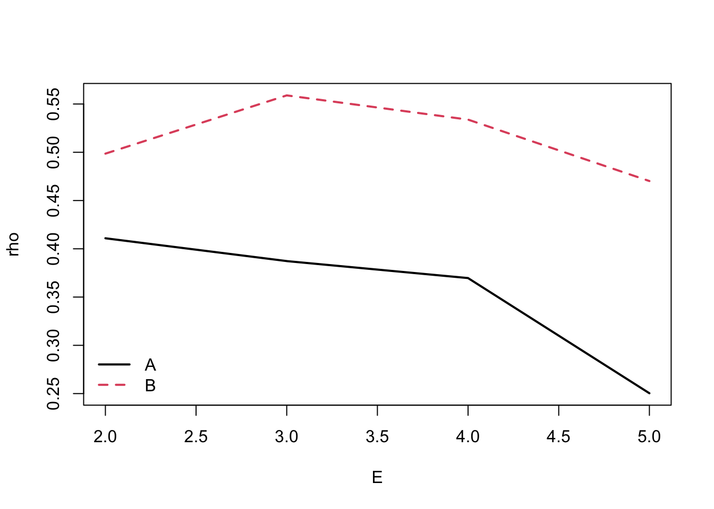
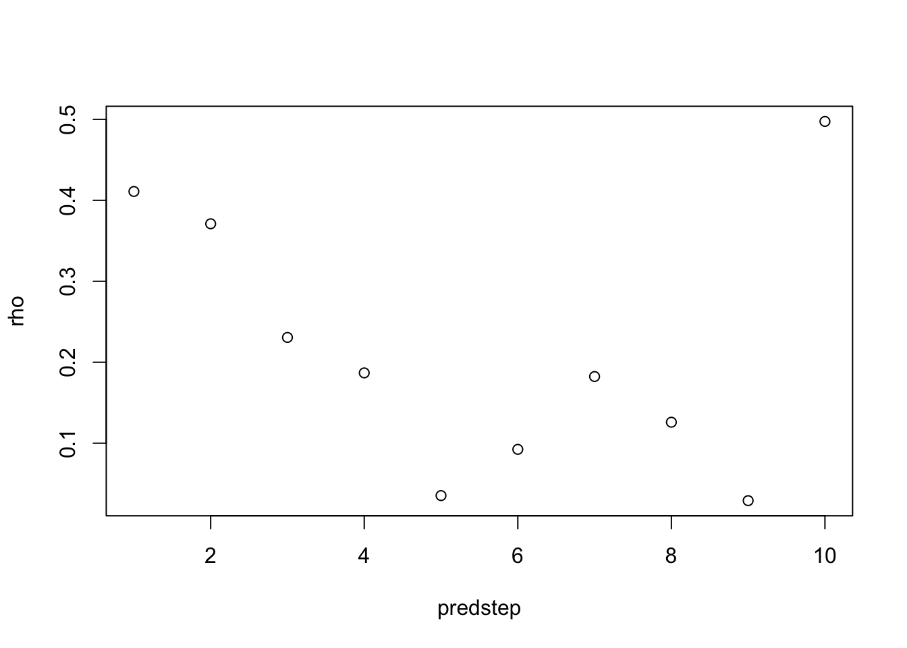
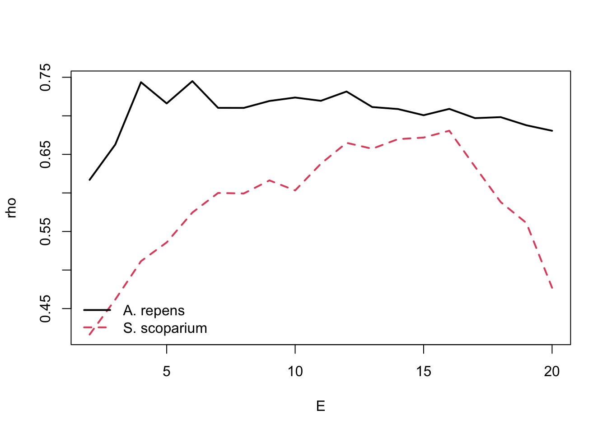
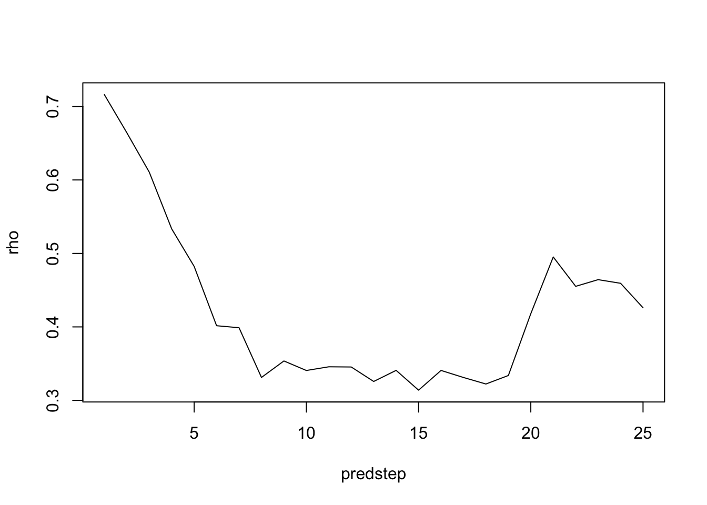
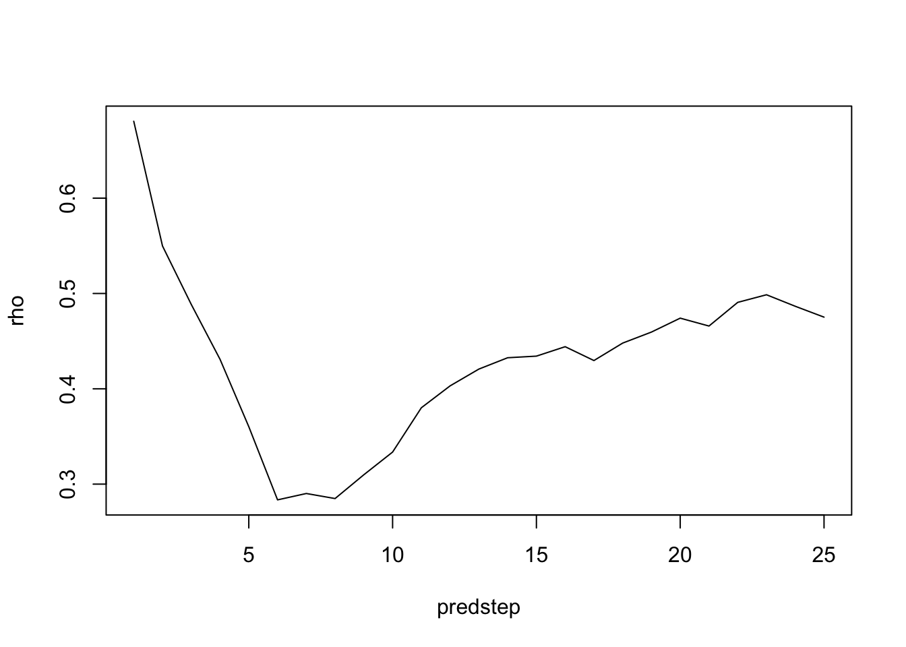
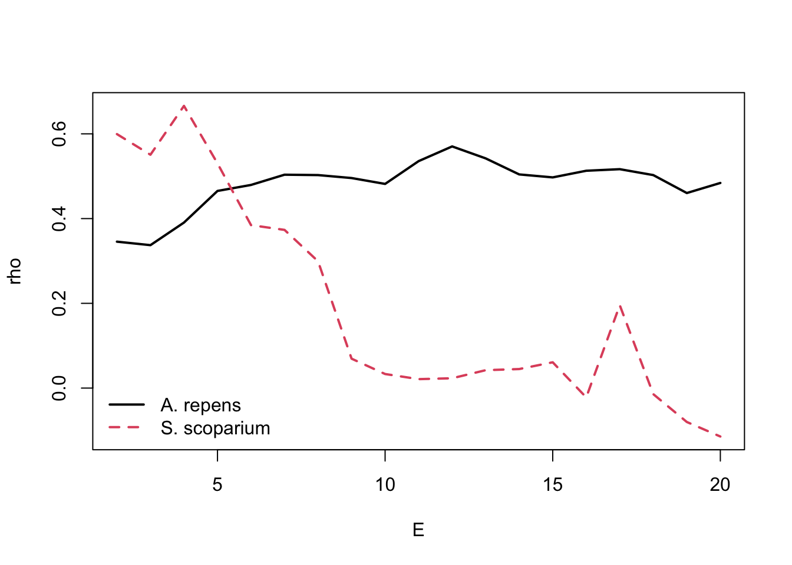
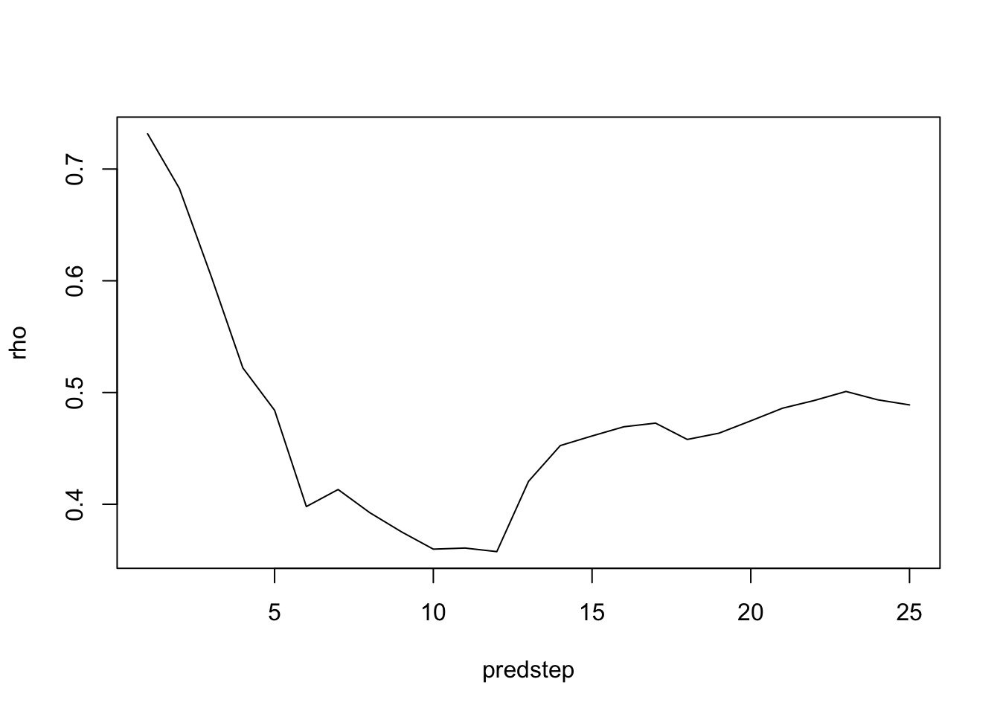

testGB <- testGIS %>%filter(GARFO_ID !="G000610"& GARFO_ID !="G000611") %>%select(AREANAME, GARFO_ID, CFRPARA, FRCITE, FRDATE, SOURCE, COMMNAME, geometry) %>%mutate(NAME =recode(AREANAME, "Area I Scallop Rotational Area"="Area_I", "Area II Scallop Rotational Area"="Area_II", "Nantucket Lightship North Scallop Rotational Area"="NL_N","Nantucket Lightship West Scallop Rotational Area"="NL_W"))plot(testGB["NAME"], main="Georges Bank Scallop Management Areas", key.pos=1, key.width =0.1, key.length =0.9)
Scallop/starfish data wrangling
Multivariate CCM examples (see below)
Dr. Deyle invited Josue and I to attend an interesting talk by a professor from Princeton on applications of data science and machine learning in urban planning.
Continued organizing and visualizing the scallop and predator data
R packages I am using frequently for all of my data exploration, analysis, and visualization include: tidyverse (dplyr, ggplot2, tibble, purrr, stringr, forcats, readr, and tidyr), ggplotify, patchwork, lubridate, mgcv, rEDM, multispatialEDM, nlme, sf, sfheaders, and the NEFSC packages I mentioned earlier.
Wednesday, June 28
NEFMC Meeting Day 2
Most of the day had a heavy focus on groundfish (haddock, cod), but interesting discussions regarding setting Acceptable Biological Catch limits (ABCs), determining FMSY, how to consider Canadian catch limits and fishing pressure on the stock, etc.
BRITE workshop: Managing setbacks and redefining success
Spatial analysis of Georges Bank scallop data (see the exploring.R and spatial.R files stored on my GitHub)
Thursday, June 29
NEFMC Meeting Day 3 - EBFM (Ecosystem-Based Fisheries Management) and Scallop Presentations
Continued spatial analysis of Georges Bank scallop data
Meeting with Dr. Dvora Hart, Operations Research Analyst at the Northeast Fisheries Science Center (and lead assessment scientist for Atlantic sea scallops fishery). Dr. Deyle and Dr. Kaufman also attended. We had an excellent discussion about both the broad direction of my project and technical details relating to how to best develop accurate models of the system. She will send me more data documenting scallop and scallop predator (starfish and crab) abundances, with instructions on how to process the data so it is suitable for quantitative analysis.
Friday, June 30
Today I worked with the Maine inshore trawl survey data that I got access to yesterday afternoon. On the GitHub page for my lab notebook, you can find the raw data in the folder “data/Maine_inshore_trawl”, and the R scripts containing the most up-to-date version of my data exploration/analysis are in the “Maine” folder.
Multispatial CCM practice
#Multispatial CCM package vignette#Ruby Krasnow#Last modified: 6/26/2023library(multispatialCCM)library(patchwork)# Example data ------------------------------------------------------------#Simulate data to use for multispatial CCM test#See function for details - A is causally forced by B,#but the reverse is not true.ccm_data_out<-make_ccm_data()Accm<-ccm_data_out$AccmBccm<-ccm_data_out$Bccm#Calculate optimal EmaxE<-5#Maximum E to test#Matrix for storing outputEmat<-matrix(nrow=maxE-1, ncol=2); colnames(Emat)<-c("A", "B")#Loop over potential E values and calculate predictive ability#of each process for its own dynamicsfor(E in2:maxE) {#Uses defaults of looking forward one prediction step (predstep)#And using time lag intervals of one time step (tau) Emat[E-1,"A"]<-SSR_pred_boot(A=Accm, E=E, predstep=1, tau=1)$rho Emat[E-1,"B"]<-SSR_pred_boot(A=Bccm, E=E, predstep=1, tau=1)$rho}#Look at plots to find E for each process at which#predictive ability rho is maximizedmatplot(2:maxE, Emat, type="l", col=1:2, lty=1:2,xlab="E", ylab="rho", lwd=2)legend("bottomleft", c("A", "B"), lty=1:2, col=1:2, lwd=2, bty="n")

E_A<-2E_B<-3#Check data for nonlinear signal that is not dominated by noise#Checks whether predictive ability of processes declines with#increasing time distance#See manuscript and R code for detailssignal_A_out<-SSR_check_signal(A=Accm, E=E_A, tau=1,predsteplist=1:10)signal_B_out<-SSR_check_signal(A=Bccm, E=E_B, tau=1,predsteplist=1:10)plot(signal_A_out$predatout)

#Run the CCM test#E_A and E_B are the embedding dimensions for A and B.#tau is the length of time steps used (default is 1)#iterations is the number of bootstrap iterations (default 100)# Does A "cause" B?#Note - increase iterations to 100 for consistent resultsCCM_boot_A<-CCM_boot(Accm, Bccm, E_A, tau=1, iterations=10)# Does B "cause" A?CCM_boot_B<-CCM_boot(Bccm, Accm, E_B, tau=1, iterations=10)#Test for significant causal signal#See R function for details(CCM_significance_test<-ccmtest(CCM_boot_A, CCM_boot_B))
# Nitrogen E001 unfertilized -----------------------------------------------------------e0010<-read.csv("~/Downloads/lab_notebook/example_code/multispatialCCMexamples/e001_arssnlvl0.csv")e0010test<- e0010 %>%group_by(FieldPlot) %>%summarise(years=n_distinct(Year))#Remove the isolated 2008 years and the extra NA rows that resulte0010 <- e0010 %>%filter(is.na(Year)|Year !=2008)for (i in1:(nrow(e0010)-1)) {if (!is.na(e0010[i,"Year"]) |!is.na(e0010[i+1,"Year"])) { e0010<-e0010 }else { e0010<-e0010 %>%slice(-i) }}repens <- e0010$Agropyron.repensscop <- e0010$Schizachyrium.scoparium#Calculate optimal EmaxE2<-20#Maximum E to test#Matrix for storing outputEmat2<-matrix(nrow=maxE2-1, ncol=2); colnames(Emat2)<-c("A. repens", "S. scoparium")for(E in2:maxE2) {#Uses defaults of looking forward one prediction step (predstep)#And using time lag intervals of one time step (tau) Emat2[E-1,"A. repens"]<-SSR_pred_boot(A=repens, E=E, predstep=1, tau=1)$rho Emat2[E-1,"S. scoparium"]<-SSR_pred_boot(A=scop, E=E, predstep=1, tau=1)$rho}#predictive skill by embedding dimensionmatplot(2:maxE2, Emat2, type="l", col=1:2, lty=1:2,xlab="E", ylab="rho", lwd=2)legend("bottomleft", c("A. repens", "S. scoparium"), lty=1:2, col=1:2, lwd=2, bty="n")

E_repens<-5E_scop<-16#Check data for nonlinear signal that is not dominated by noise#Checks whether predictive ability of processes declines with increasing time distancesignal_rep_out<-SSR_check_signal(A=repens, E=E_repens, tau=1,predsteplist=1:25)signal_scop_out<-SSR_check_signal(A=scop, E=E_scop, tau=1,predsteplist=1:25)plot(signal_rep_out$predatout, type="l")

plot(signal_scop_out$predatout, type="l")

# Nitrogen E001 fertilized -----------------------------------------------------------e0013<-read.csv("~/Downloads/lab_notebook/example_code/multispatialCCMexamples/e001_arssnlvl3.csv")e0013test<- e0013 %>%group_by(FieldPlot) %>%summarise(years=n_distinct(Year))e0013 <- e0013 %>%filter(is.na(Year)|Year !=2008)for (i in1:(nrow(e0013)-1)) {if (!is.na(e0013[i,"Year"]) |!is.na(e0013[i+1,"Year"])) { e0013<-e0013 }else { e0013<-e0013 %>%slice(-i) }}repens3 <- e0013$Agropyron.repensscop3 <- e0013$Schizachyrium.scoparium#Calculate optimal EmaxE3<-20#Maximum E to test#Matrix for storing outputEmat3<-matrix(nrow=maxE3-1, ncol=2); colnames(Emat3)<-c("A. repens", "S. scoparium")for(E in2:maxE3) {#Uses defaults of looking forward one prediction step (predstep)#And using time lag intervals of one time step (tau) Emat3[E-1,"A. repens"]<-SSR_pred_boot(A=repens3, E=E, predstep=1, tau=1)$rho Emat3[E-1,"S. scoparium"]<-SSR_pred_boot(A=scop3, E=E, predstep=1, tau=1)$rho}#predictive skill by embedding dimensionmatplot(2:maxE3, Emat3, type="l", col=1:2, lty=1:2,xlab="E", ylab="rho", lwd=2)legend("bottomleft", c("A. repens", "S. scoparium"), lty=1:2, col=1:2, lwd=2, bty="n")

E_repens3<-12E_scop3<-3#Check data for nonlinear signal that is not dominated by noise#Checks whether predictive ability of processes declines with increasing time distancesignal_rep3_out<-SSR_check_signal(A=repens, E=E_repens3, tau=1,predsteplist=1:25)signal_scop3_out<-SSR_check_signal(A=scop, E=E_scop3, tau=1,predsteplist=1:25)plot(signal_rep3_out$predatout, type="l")

plot(signal_scop_out$predatout, type="l")
#Creating time-lagged plot in 2 dimensions (i.e. A. repens population this year, vs. next year)lagRepens <- e0013 %>%mutate(lagR =0) %>%group_by(FieldPlot) %>%select(Year, FieldPlot, Agropyron.repens, lagR) %>%na.omit()data_mod <- lagRepens %>%group_by(FieldPlot) %>% dplyr::mutate(laggedval =lag(Agropyron.repens, n =1, default =NA))plotA<-ggplot(data_mod, aes(x=Agropyron.repens, y=laggedval, color=Year))+geom_point()+scale_color_gradientn(colours =rainbow(30))+theme_classic()+labs(x="t0", y="t1")#Creating time-lagged plot in 2 dimensions (i.e. S. scoparium population this year, vs. next year)lagScop <- e0013 %>%mutate(lagS =0) %>%group_by(FieldPlot) %>%select(Year, FieldPlot, Schizachyrium.scoparium, lagS) %>%na.omit()data_modS <- lagScop %>%group_by(FieldPlot) %>% dplyr::mutate(laggedvalS =lag(Schizachyrium.scoparium, n =1, default =NA))plotS<-ggplot(data_modS, aes(x=Schizachyrium.scoparium, y=laggedvalS, color=Year))+geom_point()+scale_color_gradientn(colours =rainbow(30))+theme_classic()+labs(x="t0", y="t1")#Recreated figure A6!plotA+plotS +plot_layout(guides ='collect')